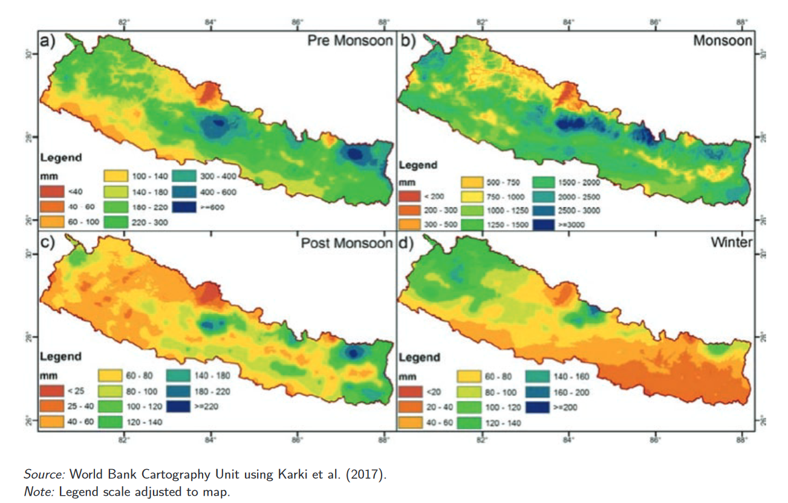

flowchart LR A[1 National] --> B[7 Provinces] B --> C[753 Local gov.] C --> D[6743 Wards] D --> E[000s Springshed]
3 Background
3.1 Water Security in Nepal
The hydrological system of the Himalaya has been experiencing significant stress. This is caused by different factors: climate change is producing a decline in annual precipitation as well as more weather extreme events (see Section 3.3.1 ) ; population increase and lifestyle changes are augmenting water demand; urbanization and development are requiring the construction of infrastructure system that can disrupt the current ecosystem. Additionally, governance institutions are often lacking the management and capacity to properly addressed the issues to face this changing and complex situation.
The case of Nepal, well represent these challenges. The country utilizes only a fraction of the available water (15 out of 225 billion \(m^3\)) (Joseph and Shrestha 2022). This is due to the rugged geography, political instability, skewed seasonality, capacity and governance gaps. The inability to provide water significantly affects several sectors such as agriculture, industry, health and creates an additional difficulty to the country’s development. A recent report by the World Bank (Joseph and Shrestha 2022) identified five key challenges:
Service delivery in Water Supply and Sanitation
Water Governance for Service Delivery and Integrated Management in a Federal Framework
Irrigation for Greater Agricultural Productivity and Food Security
Building Resilience—Dealing with Climate Variability and Change
Trans-boundary Management
Until recently, mountain water security was studied mostly focusing on glaciers and snowpacks with a strong focus on climate and hydrogeological aspects. Non glacial contribution has been ignored (Ohja > (Andermann et al., 2012; Bookhagen, 2012).).[Research gap on water spring (Tambe et al. 2009; NITI Aayog 2018),] in (sharma_conserving_2019?)
More recently the approach is shifting to include groundwater, meltdown pathways, springs, infrastructural interference (Drenkhan et al. 2022) as well as socio-economic aspects. Within this approach, the study of spring water becomes very relevant.
An additional reason has been proposed, since studying springs is very intensive due to their number, to move from the spring-centric to the ‘mountain acquifer’ (Tambe et al. 2020).
3.2 State of water springs in Nepal
It has been estimated that half of the more than three million perennial springs in the Himalaya have either dried up of have become seasonal. Documentation of this phenomenon starts from the ’80s (Valdiya and Bartarya 1991). Nepal mid-hill region is not excluded from this trend. Chapagain, Ghimire, and Shrestha (2019) found decline in discharge in over 30% of the monitored springs.
Causes are to be found in the raising of temperature (Pandey et al. 2017), change of precipitation patterns Agarwal et al. (2012), land use and soil erosion Rautela (2015) , changes in forest type Naudiyal and Schmerbeck (2017), infrastructure Mukherji et al. (2018) are contributing to this decline in both water quantity and water quality. Chauhan et al. (2023) quantified the impact of different causes as follows: 62% of identified studies found climate change as a factor of degradation by reducing rainfalls; other factors were infrastructure development (50% of studies), increased water consumption (50%), natural disaster (37%), lack of systemic effort in water conservation (37%), change in land use (37%), limited knowledge of spring hydrology (25%), influx of migrants (25%). It is worth noting that the majority of the identified factors can be managed at the local level. Additionally, more sporadic events such an earthquake, can cause changes in the geohydrological conditions of the affected areas, resulting in drying up some of the springs (Lamichhane et al. 2020)
3.2.1 Spring water research
Given the impact of spring water and the current challenges, spring water research ahs been gaining more attention. In Nepal it was initiated by ICIMOD in 2003 (Merz et al. 2003) and since then, several studies have been carried out. The studies are mostly focused on mapping springs and understanding the spring status in terms of discharge trend [(dhakal_mapping_nodate?), Chapagain, Ghimire, and Shrestha (2019), Gurung et al. (2019), Pandit, Shakya, and Shrestha (2019), Adhikari et al. (2021)], exploring the causes of spring degradation (Dhakal et al., 2015; Sharma et al., 2016; Poudel & Duex, 2017), water quality assessment (Gurung et al., 2019b; Pandit et al., 2019; Khadka & Rijal, 2020; Thapa et al., 2020; Tiwari et al., 2020) and springs distribution modeling (Ghimire et al., 2019; Pradhan & Shrestha, 2022), Spatially, most of the districts of the mid-hills and lesser Himalaya have been covered for analysis (Table 3). Methodologically, the majority of the studies are perception-based and have adopted household surveys, questionnaire surveys, focused group discussions (FGDs), and key informant interview methods (Merz et al., 2003a, 2003b; Poudel & Duex, 2017; Adhikari et al., 2021).
TODO read Poudel and Duex (2017),
3.2.2 Classification
Spring classification (daniel2021?)
See also (chinnasamy2016?)
Conceptual model for aquifer (tambe2020?)
3.2.3 Methods of analysis
For a review on methods of analysis see (chinnasamy2016?)
A list of stressors for water spring was compiled by Daniel (daniel2021?) (visualise as tree)
[Unknowns: groundwater in mid-hill and its contriburion to riverflow, constribution of springs on water budget]
The Eastern Himalaya is a region abundant with water but several areas suffer from water scarcity or over abundabce.
3.2.4 Spring-shed remediation techniques
To face the above mentioned challenges, protocols for spring revival have been created such as the one from ICIMOD (shrestha_protocol_2018?) . The protocol consists in 6 steps (mapping, setting up data monitoring, understanding social and governance systems, hydrogeological mapping and identification of recharge areas, development of management protocols) and involves different expertise.
https://www.wocat.net/en/ https://www.icimod.org/get-informed/himcat/ https://www.icimod.org/solutions/?category=NEPCAT_technologies
Training https://www.wocat.net/library/media/242/
3.2.5 Relevant Hydrogeological knowledge
Spring discharge measurement (herschy1993?)
Dynamic of high and low spring flow (smakhtin2001?)
Rainfall and water spring (agarwal2012?)
Mapping springs (al-manmi2019?)
3.3 Stressors
3.3.1 Climate change
[Add key references on climate change in HKH and Nepal]
Climate projection estimate for the Himalayan region, a higher warming rate (1.82 °C) than global average with effect on precipitation patterns with increase in the Eastern Himalaya and decrease in the Western Himalaya (fomr Ohja (Chakraborty et al., 2019; Krishnan et al., 2019; Kumar et al., 2021).) This changes in precipitation will impact water security in the region afffecting up to 1.5 billion people ( considering upstream and downstream communities).
[Key changes: extreme events, declining rainfall]
The Government of Nepal has written a Climate Change Policy of 2019 with strategies for watershed conservation, agriculture, food security MoFE 2019. The National Water Policy 2020 and the National Policy for Disaster Risk Reduction (MoHA 2018) also address climate-change-related challenges.
Facing annual climate variability is one of the main issues in the water sector. While Nepal annual precipitation is 1,500mm, 80% of it happens in the four months of the monsoon. Extreme variability also exists spatially, see image below. This variability, negatively affects diverse sector of society. An estimate of its impact on agriculture and hydroelectricity found it to cost 1.5-2% of annual GDP GoN 2014.
{#(precipitation?)}
Bolch et al. 2019; Immerzeel, Lutz, and Andrade 2020)
Water-induced disaster also represent an area of concern.
is causing variation in the hydrological cycle of the HKH (Akhtar, Ahmad and Booij, 2008; Immerzeel, van Beek and Bierkens, 2010; Shrestha and Aryal, 2011; Pomeranz et al., 2013; Azhoni and Goyal, 2018)
Discharge delay is also experienced
and different studies have found declining discharges in the Himalaya region (kumar2018?).
3.3.2 Demand increase
[Briefly mention but then refer to study area data ]
3.3.3 Infrastructure
3.4 Governance
The following diagram shows the basic structure of Nepal governance that shows the 4 levels of governance. At the smallest one, the ward, may include one or several springshed. It should be noted that the recent changes with the new constitution towards a federal union, several changes are still in progress concerning new responsibilities and new legal arrangements. According to the World bank, Nepal faces three main institutional challenges: “(1) low capacity for service delivery of local governments; (2) trade-offs in water allocation across subsectors; and (3) implementation of an integrated water resource management in a federal framework” (Joseph and Shrestha 2022 , p.17).
Water Governance - Since 1966 Ministry of Water Resources was originally responsible for all the drinking water supply under its Department of Irrigation and Water Supply (Nepal IRC, 1988). From 1971, the department separated into two parts: Department of Irrigation and Department of Water Supply and Sewerage (DWSS). In latest years water supply under 1500 people are managed by the Ministry of Panchayat and Local Development (MPLD) (Dahal, Thapa, and Shiwakoti 2019). The Water Resources Act of 1992 allows for the formation of water user groups to oversee water projects and direct priorities. The Water Resource Strategy of 2022 defines the water sector priorities as well as the actions, indicators and timeline. It proposes the use of basin planning units and Integrated Water Resources Management (IWRM) Chauhan et al. (2023) . With the Local Government Operation Act 2074, Rural Municipalities are responsible on the management of water and sanitation (White 2018). The legal basis to the right of water are stated in the new constitution of 2015.
This process of decentralization has created some issues: power needs to be redistributed across institutions, in the case of IWRM World Bnk noted that “The federal and provincial governments have major responsibilities when it comes to integrated water management; however, the role the local governments will play to facilitate its operationalization, or basin-scale planning, is unclear.” (joseph2022?). This causes possibility of conflict between federal and local government. A governance issues very linked to hydrology is the mismatch between hydrological units and governance units. A river basins can cover several municipalities (palikas), the same issue would be experienced if using watershed as basic units but peraphs at a smaller scale.
Another issue is the lack of technical capacity to plan and execute projects. Since decentralisation, local governments were not able to spend part of the budget due to capacity constraints (Bank n.d.). In addition, significant budget loss were experienced due to low efficiency and accountability issues.
Social inclusion within (water) governance - even if efforts are being made to increase social inclusion in the decision making process (see Rural Village Water Resources Management Project as an example), therefore gaps still exist in the participation of disadvantaged groups and woman.
[set of suggestion at policy level in (Chauhan et al. 2023)]
[use of water]